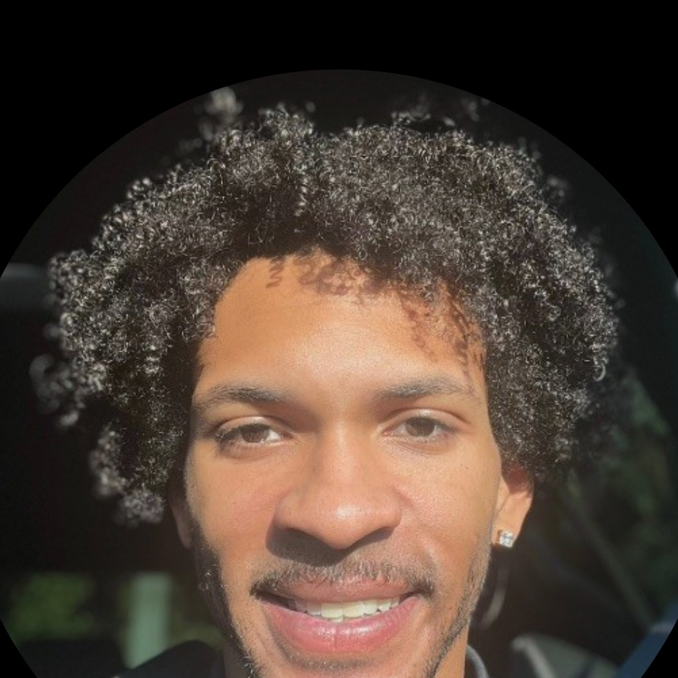

Research Lead · ML Architect · Co-founder, Qira LLC
Maricopa, Arizona

I design the architectures. LOLM’s hybrid Transformer-SSM dual-stream system, the traffic network operating-band framework, the g(K) = 4K(1−K) gating function in EGC — these are mine. I built them because no existing tool solved the problem the right way.
Co-founded Qira LLC with my brother Bryan Leonard. Self-taught — no university, no lab, no venture capital. Currently scaling models to 1.57B parameters on NVIDIA H200 and Google TPU v4-8 infrastructure while running a live traffic intelligence system and an empirical consciousness study.
U.S. Provisional Patent #64/002,166 filed March 10, 2026.
A hybrid Transformer-SSM architecture that separates language into surface and latent streams. The 29% minority SSM path turns out to be 8,645x more essential than the 71% majority Transformer path — dependency inversion. 7 complementary training losses, 5-stream fan-out architecture.
Three original theoretical frameworks guide the architecture: a field-theoretic gate mechanism, a multi-scale phase selection system, and a latent generative process model. Each maps to a specific component and training objective.
Patent #64/002,166An original framework for detecting robust coordination regimes in networked systems. The core innovation: operating bands (ridges) instead of fragile point optima. DON translates these ridges into real traffic signal adjustments with safety clamping.
Ridge fraction 95–97% · Multiplex scale-free cross-layers strengthen stability · Validated on METR-LA benchmark
ValidatedA mathematical framework measuring how emotional knowledge gates conscious expression. The gating function is mine: g(K) = 4K(1−K). Live study with 44+ participants, three confirmed response types, and a stable correlation from N=14 forward.
Real-time traffic intelligence monitoring 8 Phoenix freeway corridors 24/7. Live AZ-511 data, TomTom live speeds, cascade prediction, FHWA delay cost analysis, and AI-powered crew dispatch recommendations every 2 minutes.
Measured. Validated. Reproducible.
In LOLM, the minority path (29% SSM) turns out to be 8,645x more essential than the majority path (71% Transformer). The architecture that does less structural work carries almost all the semantic weight. This inverts the assumption that majority components dominate.
LOLM’s 7 complementary losses create natural gradient isolation between streams. Each loss function trains a specific capability without interfering with others. This is what enables the 43% convergence speedup — no loss is fighting another.
In the EGC data, subjects don’t move linearly from low expression to high expression. They follow a two-phase trajectory governed by g(K) = 4K(1−K) — rising gate openness until K=0.5, then falling. The gate has a maximum, not a monotonic climb.
Our framework shows that real networked systems don’t have fragile optimal points. They have operating ridges — broad bands where the system is stable and performant. 95–97% of the validated operating space is ridge. Optimization means finding the band, not the point.
I build the thing. Not the pitch for the thing. Not the roadmap for the thing. The actual thing. If the architecture doesn’t work at scale, the idea was wrong. Fix the idea.
The best systems aren’t fragile at their optimum. They have ridges — broad operating bands where everything works. I design for ridges. In architectures, in frameworks, in how I work.
Self-taught is not a limitation. It’s a design constraint. No institutional inertia. No committee approval. No inherited assumptions. Every decision I make, I made because the evidence said to.
Architectures, research, and hard problems.